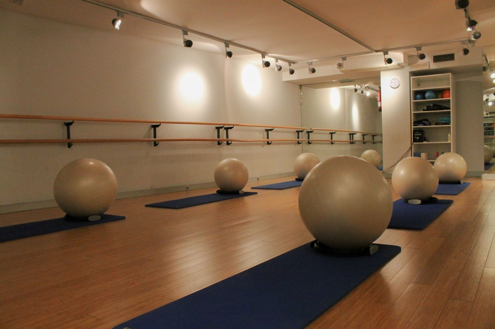
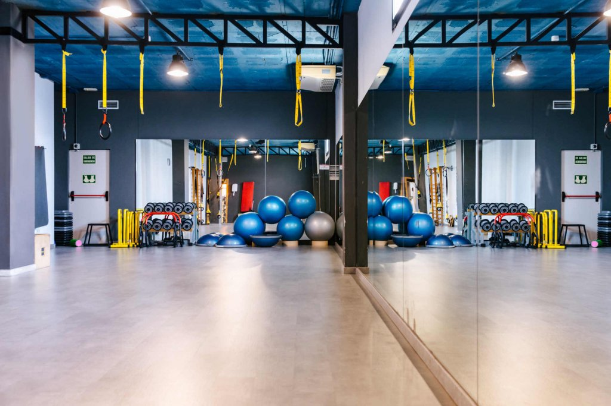

Sala de Pilates

Descripción
La Sala de Pilates es un espacio diseñado para aquellos que buscan fortalecer su núcleo, mejorar la flexibilidad y desarrollar una postura corporal saludable. Equipada con equipos especializados, esta sala ofrece un ambiente tranquilo y enfocado donde los practicantes pueden participar en ejercicios de bajo impacto que trabajan en la alineación y el control del cuerpo. Con instrucción especializada, nuestros profesionales guiarán tus sesiones de Pilates para ayudarte a lograr un cuerpo fuerte y equilibrado.
Materiales
Entrenadores de pilates,sillas de pilates, barriles de Pilates, pelotas de pilates, bandas elásticas, almohadas y bloques.
| Capacidad |
Precio por hora |
| 6 personas |
120 € |
Sala de TRX

Descripción
Bienvenido a la Sala de TRX, un espacio dinámico dedicado a los amantes del entrenamiento funcional. Equipada con sistemas de suspensión TRX, esta sala te permite aprovechar tu propio peso corporal para desarrollar fuerza, resistencia y estabilidad. Con entrenadores expertos que te guiarán a través de una variedad de ejercicios, podrás desafiar y fortalecer tu cuerpo de manera efectiva. Ya seas principiante o experimentado, la Sala de TRX ofrece un ambiente versátil para alcanzar tus objetivos de acondicionamiento físico.
Materiales
Entrenadores de pilatesespejos, anillas, una barra de dominadas, diferentes trx, esterillas, bandas elásticas, roller abs y roller foams.
| Capacidad |
Precio por hora |
| 5 personas |
100 € |
Sala de Yoga
Descripción
La sala de yoga es un espacio tranquilo y luminoso diseñado para ofrecer a los participantes un ambiente sereno y relajante para su práctica. Con un suelo cómodo y antideslizante, equipamiento de yoga adecuado y elementos decorativos que fomentan la calma, la sala proporciona un refugio para la meditación, la flexibilidad y el bienestar general. Con ventilación adecuada y una atmósfera de privacidad, los practicantes pueden sumergirse en su práctica de yoga, encontrando paz y conexión consigo mismos en medio del ajetreo del gimnasio.
Materiales
Entrenadores de Yoga, esterillasas de yoga para los participantes, junto con bloques y almohadas.
| Capacidad |
Precio por hora |
| 20 personas |
400 € |